Can you think of a day in our life which goes without problem solving? No. In our life we are bound to solve problems. In our day to day activity such as browsing some web pages, purchasing something from a general store and making payments, depositing fee in school, or withdrawing money from an ATM involves some kind of problem solving. It can be said that whatever activity a human being or machine does for achieving a specified objective comes under problem solving. During the process of solving any problem, one tries to find the necessary steps to be under taken in a sequence.
Often the best way to understand a problem is to draw pictures. Pictures often provide us with a more complete idea of the situation than a series of short words or phrases can. However, pictures combined with text provide an extremely powerful tool for communication and problem solving.
A Flowchart is a pictorial representation and it gives an idea of instructions to perform a task or calculation. They are widely used in multiple fields to prepare a document, study, plan, improve and communicate often complex process clearly as it is easy to understand a diagram. In the flowchart, each shape has a particular meaning. They are given in the following table.
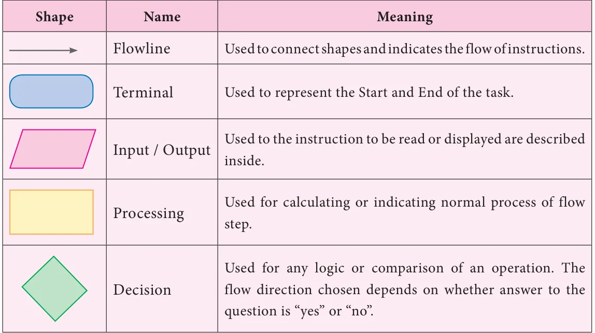
To understand better, let us see, how we can apply flowchart practically.
6.2.1 Types of Flowchart
Sequential flowchart
A flowchart describes the operations and in what sequence the problem is to be solved.
Situation 1
Scan QR Code from your textbook to view related digital content. as shown in the pictures below.
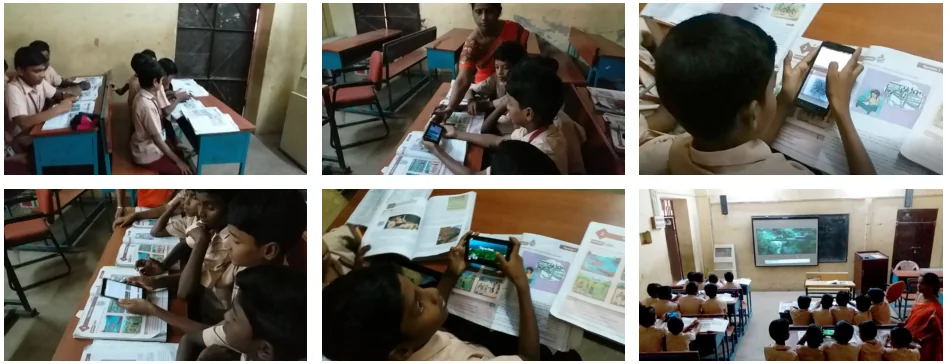
First, let us write an step by step process to scan QR code:
Step by Step process
First, let us write an step by step process to scan QR code:
- Take correct textbook page on which required QR code were situated.
- Open QR code scanner on your mobile or tab.
- Scan QR code to view related digital content.
- View digital content.
Now, let us write a sequence flowchart for this given in figure beside.
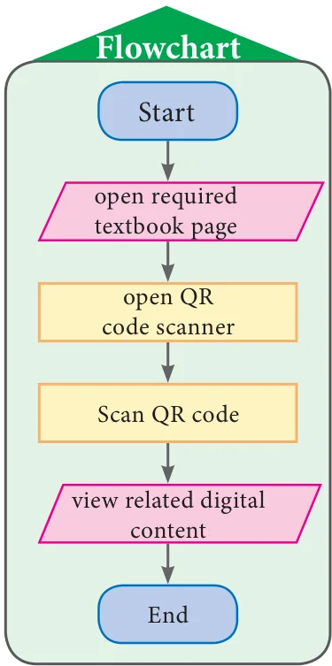
Example 6.1
Construct an appropriate flowchart for depositing a sum of money in an ATM using the instruction given below.
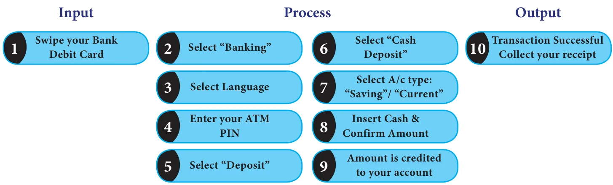
Solution
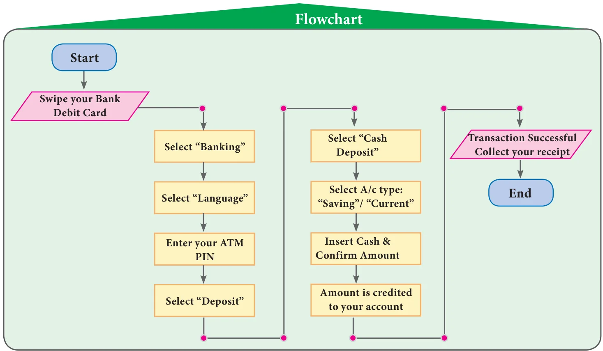
Conditional flowchart
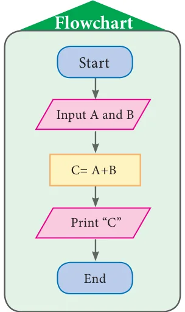
Situation 2
Construct the flowchart to find the sum of given two numbers. (To achieve this, first the two numbers have to be received and kept in two places, under two names. Then the sum of them is to be found and printed. The flow chart for this is given in figure beside.)
In the above flow chart, there is a special meaning in writing \(C = A + B\). Here, the value of C indicates the sum of A and B values. For example, if we input \(A = 325\) and \(B = 486\) then the value of C will be printed as 811. Let us learn more from following examples.
Example 6.2
Construct the flow chart to find whether the given number is a positive integer or negative integer or zero and write step by step process.
Solution
In this question we are asked to find the given integer \(x\) is a positive number or a negative number or a zero. For that, first we have to assign the value of \(x\) and check whether \(x\) is greater than 0. If 'yes', we will print "x is a Positive number". If 'no' then we will check again if the value of \(x\) is less than \(0\). If 'yes', we will print "x is a Negative number". If 'no', then we will print "\(x = \text{zero}\)".
Step by Step process:
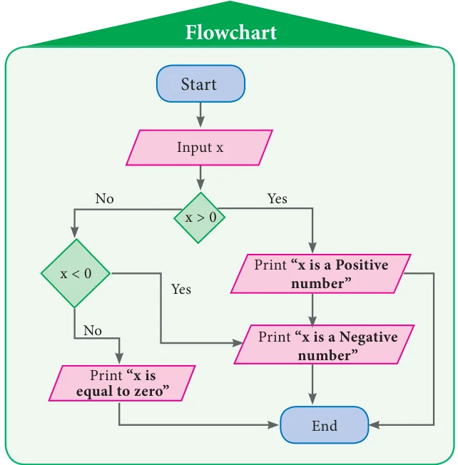
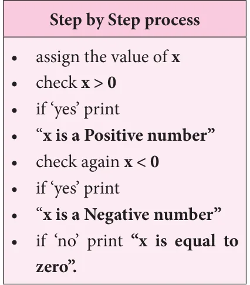
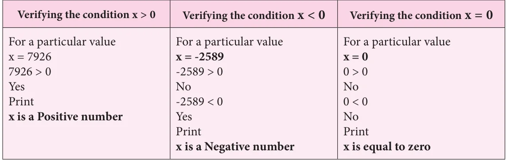
Example 6.3
Construct the flow chart to explain the process of finding the greatest number among the given 3 natural numbers and write step by step process
Solution
In this question, we are asked to find the greatest of the given 3 numbers. For that, first we have to assign the values of \(a\), \(b\) and \(c\) and then check whether \(a\) is greater than \(b\). If 'yes', we will check again if the value of \(a\) is greater than \(c\). If 'yes', we will print the value of \(a\). If 'no', then we will check again if the value of \(b\) is greater than \(c\). If 'yes', we will print the value of \(b\). If 'no', then we will print the value of \(c\).
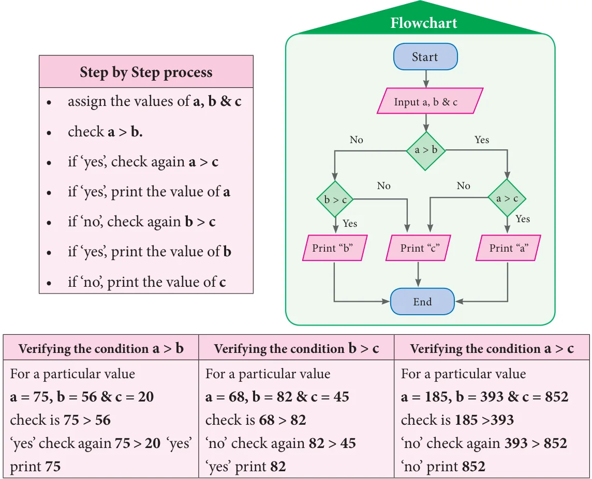
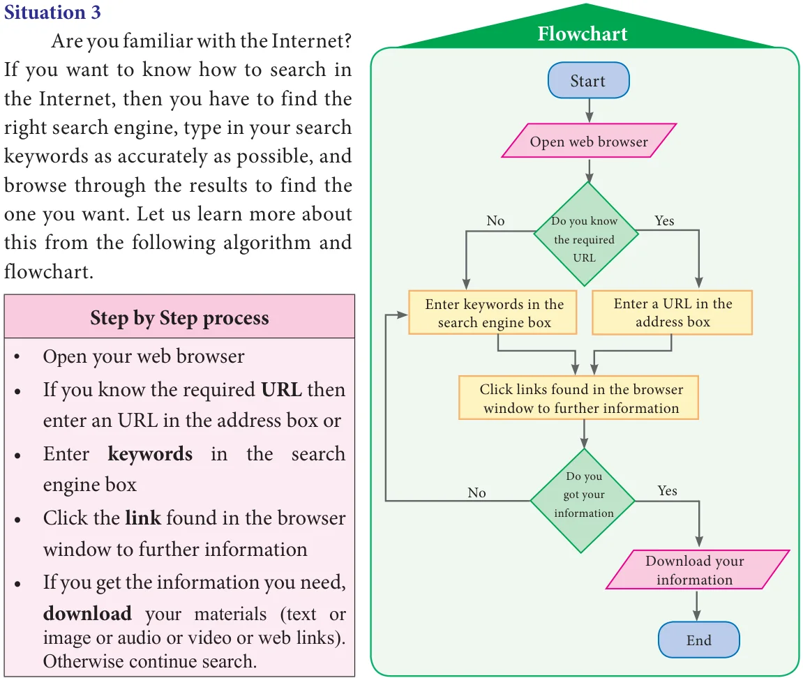